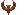
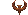

Things I should have report
It had to be a quick spot of what Quake has become in 2012 but it really seems that I'm back in the game scene in a stable way. For the ones who are asking, it's all Xeno and Polarite fault: seeing their enthusiasm in keeping Quake alive convinced me to get back in activity. Curiosity did the rest: in all those years a lot of things have changed. New engines, new mods, new maps. Also online playing modes are, in some ways, new. ClanArena X took the place of standard Clan Arena, CTF now is CTCTF, Rocket Arena is included in most mods, Runequake evolved greatly, RQuake Coop is a nice alternative to normal fragging and CRMod has been updated to version 6.5. After a little checking I've updated the server list for Qview with working servers.
Interesting engines like Darkplaces, Quakespasm and DirectQ (each one in its way) continued the work started by Tomaz with great engines. Also Proquake have been updated with a new release which supports some new functions or fix bug that ones new operating systems may have created in the game.
An incredible number of maps have been released and also some new single player mods. Most of them can now be installed and played with Quakeinjector which automatically downloads and setup all files in your Quake folder. Wow.
It took quite an year to check most of this stuff (and really had fun in doing that), but the best part was the [QUAD] LAN party 5. Meeting old clan mates after 10 years was really great. Seems rust don't work on [QUAD] folks: old and young teammates knows the job. We had welcome Guren in the clan during the LAN: ex M.P member, he's been the technician in most LAN parties and missed only a single party since we start playing. Talking to each other I discovered that most of them quit playing when italian servers were shut down. Foreign servers were too laggy in 2004 and italian game providers were looking to new ones.
Now the situation is different. Even local connection can host a few players and with the correct settings this server can stand in a permanent way.
With Yanosh help I was able to set up two italian servers: a Runequake and a Crmod one. It took a long time, but now the beta test phase has ended and both of them are running smooth. Due to security settings the servers are not listed in internal Proquake server list, but are listed in most online server browsers and so they are quite easy to be reached.
Proquake users can set cl_web_download_url "http://quad.homepc.it/" to download maps, models, sounds and locs directly from our server. Map download works also with DirectQ and Darkplaces.
Having a machine Quake-dedicated gives also the possibility of having an http and an ftp server. So I've fixed this homepage to make it work with modern browsers, removed most javascript and quite all sounds. This page had never been so accessible as it is now. I've checked it up with Chrome, Internet Explorer, Opera and Rekonq and found no bugs. A clone of this page lies on http://quad.homepc.it/ but for visibility reasons the official clan address remains http://web.tiscali.it/quadclan/. [QUAD] machine seems to be not so friendly with search engines and well.. I like it.
I've also put together all Quake files I was able to find and categorized them in the best way possible: the result of all this is ftp://quad.homepc.it/ : 22 Gigabytes of pure oldstyle gibbing.
I've also found the time to finish the readmes to Quake Extreme Mod and to all Xeno maps (minimal, but readme.txt).
Last but not least I've created a page on facebook (well linked on the top of this page) called Quakeitalia: in the era of social networks this is the easier way to meet other player or to organize events like "On the rocks!" we had last month.
Don't expect news reporting like it happened in the past: I will report only clan activity, major events or new file releases. There are better place where to find them: Quakeone.com and Quaddicted.com in the first line! Netquake lives!